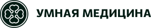

Солодухин Евгений Викторович
Главный врач, ортопед
Протезирование и восстановление зубов, протезы на имплантах
Записаться к врачу
Стоматолог-терапевт, ортодонт
Исправляет прикус элайнерами, брекетами, пластинками и трейнерами, лечит кариес и каналы, в том числе под микроскопом, делает художественные реставрации, отбеливание и профессиональную гигиену, готовит зубы к протезированию.
Стоматолог-терапевт, ортодонт в Удельной. Точную стоимость врач называет после осмотра и снимков.
Отзывы с ПроДокторов дословно, со ссылкой на каждый.
Все отзывы о враче на ПроДокторовОгромное спасибо Каштановой Екатерине Константиновны. Я очень боялась лечить зубы, но доктор проявила невероятное терпение и профессионализм, очень чуткое, доброе отношение. Провела тщательную диагностику КТ, снимок, подробно рассказала мне, как будет проходить лечение. Пролечила зубы качественно, а самое главное, безболезненно. Лечение каналов прошло легко и комфортно. Лучший стоматолог.
Понравилось: Аккуратность, профессианолизм.
Пациент, приём в октябре 2026 · отзыв на ПроДокторов, 15.10.2026
У меня неправильный прикус, хочу поставить брекет-систему. Пришел на первичную консультацию к Екатерине Константиновне. На приеме доктор сделала снимки и фото зубов, составила план лечения, подробно мне рассказала про мою ситуацию, ответила на все вопросы.
Понравилось: Профессионализм, участие врача.
Не понравилось: Все ок.
Пациент, приём в октябре 2026 · отзыв на ПроДокторов, 07.10.2026
Хочу выразить огромную благодарность доктору–ортодонту Каштановой Е. К. На первой консультации доктор подробно рассказала о вариантах исправления прикуса и ответила на все мои вопросы (а их было много), сделала сканирование, составила план лечения. Очень чуткая, внимательная. Успокоила меня. Могу смело рекомендовать Екатерину Константиновну! Приём провела доктор качественно, вопросов не осталось! Буду с уверенностью рекомендовать Екатерину Константиновну своим знакомым и друзьям!
Понравилось: Всё понравилось.
Пациент, приём в сентябре 2026 · отзыв на ПроДокторов, 03.10.2026
С детства были кривые зубы, у меня неправильный прикус, а из-за того, что есть отсутствие зубов, зубы ещё сильнее поехали. Пришел к Екатерине Константиновне по рекомендации. На первой же консультации мне сделали фото и снимки зубов, врач подробно описала проблемы и рассказала, как будет достигаться результат, составила план лечения. Врач опытный, работает на цифровых методах, всё понятно объясняет. Мне все очень понравилось, рекомендую.
Понравилось: Все понравилось.
Пациент, приём в сентябре 2026 · отзыв на ПроДокторов, 13.09.2026
Пришла с дочкой на первичную консультацию к ортодонту Каштановой Екатерине Константиновне, на приёме ей сделали все необходимые снимки, доктор просканировала зубы, чтобы проанализировать ее ситуацию, составила подробный план лечения. Нас всё устроило. Будем лечиться. Спасибо большое. Буду рекомендовать Вас своим знакомым.
Понравилось: Все отлично.
Не понравилось: Не было недостатков.
Пациент, приём в сентябре 2026 · отзыв на ПроДокторов, 11.09.2026
Была на первичной консультации у Каштановой Екатерины Константиновны по поводу бруксизма и прикуса. Врач подробно и профессионально всё объяснила, ответила на все вопросы, осмотрела и предложила план дальнейшего лечения. Всё достаточно развернуто и понятно. Я осталась очень довольна консультацией. Буду лечиться у Екатерины Константиновны. Рекомендую доктора-ортодонта!
Понравилось: Профессиональная консультация.
Пациент, приём в сентябре 2026 · отзыв на ПроДокторов, 10.09.2026
Обратилась в данную клинику по рекомендации подруги. Сделали снимок прямо в клинике, сразу же провели бесплатную консультацию. Очень понравилась врач Каштанова Екатерина, милая, спокойная, все подробно объяснила, рассказала. Впервые в жизни такая долгая консультация, все тщательно осмотрела. Нашли несколько кариесов. Решила начать с профгигиены и далее записалась на лечение. Гигиену сделала на отлично. Рекомендую Екатерину Константиновну!
Понравилось: Все понравилось.
Не понравилось: Минусов не обнаружила для себя.
Пациент, приём в июне 2026 · отзыв на ПроДокторов, 01.06.2026
Пришла на прием к Екатерине на плановую гигиену. Давно не была и не думала, что что-то есть. В итоге обнаружили кариесы. Врач посмотрела, сказала, какие зубы нужно лечить, сразу записалась на прием следующий, а главное, озвучили примерную стоимость, которая оказалась очень близка к реальности. Екатерину мне посоветовали, и я не пожалела, что пошла. Привела всю семью к ней лечиться, теперь это наш доктор. Делает все аккуратно, во время приема спрашивает обратную связь и говорит действия. Что ты знаешь, что тебе делают и почему, и где может быть больно. Если нужно, вколет анестезию дополнительно. В общем, все проходит комфортно и понятно.
Понравилось: Отношение, время, качество работы.
Пациент, приём в феврале 2026 · отзыв на ПроДокторов, 24.04.2026
Записала маму на консультацию к Екатерине Константиновне, провели профессиональную гигиену, всё прошло очень хорошо, дальше будем лечиться обязательно. Специалист очень внимательная, рассказала подробно по этапам лечения, указала зубы, которые нужно лечить в первую очередь. Врач работает с микроскопом, вежливая и приветливая.
Пациент, приём в апреле 2026 · отзыв на ПроДокторов, 09.04.2026
Очень аккуратный и компетентный стоматолог, обычно лечусь по ДМС. Записался на гигиену плановую, чтоб не ждать записи долго. Процедуру провели очень быстро и без боли, эмаль осветилась и стала белее. Доктора однозначно советую!
Понравилось: Все очень понравилось, рекомендую!
Пациент, приём в марте 2026 · отзыв на ПроДокторов, 25.03.2026
Громова, 10/2
пгт Удельная, Раменский округ, рядом с Жуковским.
Ежедневно с 9:00 до 21:00
Перезвоним за 5 минутК нам ездят из Жуковского, Раменского, Быково, Ильинского, Красково, Малаховки, Островцов, Люберец и Балашихи.
Оставьте заявку на сайте и укажите врача. Администратор перезвонит и подберёт время. Клиника работает ежедневно с 9:00 до 21:00.
Первичная консультация ортодонта стоит 1 700 ₽.
Зависит от прикуса, возраста и того, как важна незаметность. Ортодонт осмотрит, посмотрит снимки и предложит варианты с ценой: брекеты от 28 500 ₽ за челюсть, элайнеры от 215 000 ₽.
Лечит: кариес, каналы под микроскопом, эстетические реставрации, отбеливание и профгигиена. Перед брекетами или элайнерами зубы удобно вылечить у того же врача.
В стоматологии «Умная Медицина»: Московская область, Раменский округ, пгт Удельная, ул. Громова, 10/2. Это рядом с Жуковским, у клиники своя парковка.
Запишитесь на консультацию: врач осмотрит, посмотрит снимки и предложит план лечения с ценой.
Имеются противопоказания. Необходима консультация специалиста.
Главный врач, ортопед
Протезирование и восстановление зубов, протезы на имплантах
Записаться к врачу
Хирург, имплантолог
Имплантация, удаление зубов и подготовка к имплантации
Записаться к врачу
Хирург, имплантолог
Удаление зубов и имплантация, хирургия в сложных случаях
Записаться к врачу
Терапевт, эндодонтист
Лечение кариеса и каналов, сохранение зубов
Записаться к врачу
Ортопед
Восстановление зубов и протезирование, эстетичные коронки
Записаться к врачу
Детский стоматолог
Дети, профилактика и лечение детских зубов
Записаться к врачу
Перезвоним за 5 минут, подберём врача и удобное время.
Оставьте номер, администратор перезвонит и ответит на вопросы.
Подойдёт КТ, панорама, прицельный снимок или фото плана лечения из другой клиники. Врач посмотрит и ответит в течение рабочего дня. Это бесплатно.
Хирург, ортопед и терапевт осмотрят вас вместе, сделаем КТ. Консультация бесплатная, если остаётесь на лечение. Стоимость лечения врач назовёт после осмотра.
Консультацию ведут вместе
ХирургМихаилОртопедЕвгенийТерапевтАртёмПервый визит 0 ₽, если остаётесь на лечение
Хирург, ортопед и терапевт посмотрят ваш случай вместе и предложат два-три варианта с ценой. Оставьте номер, администратор перезвонит и подберёт время.
Скидка 10% на лечение, если оплатить его в день консультации
Перезвоним за 5 минут, ежедневно с 9:00 до 21:00. Нажимая кнопку, вы соглашаетесь с обработкой персональных данных и Политикой конфиденциальности.
Администратор перезвонит за 5 минут.